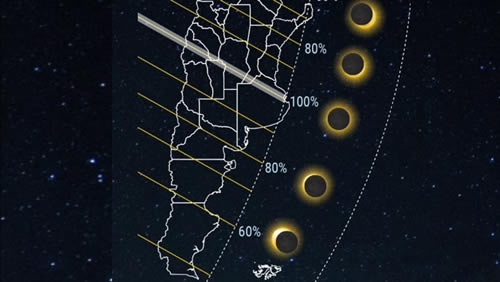

Real Chubut - Agencia de Noticias


Eclipse solar 2019 en la Argentina: horarios, cómo y dónde verlo mejor

Este martes se produce el mayor fenómeno astronómico que puede verse en forma total y parcial en la Argentina; toda la información para poder observarlo de forma segura y completa.
La alineación exacta de tres cuerpos en el espacio que conjugan en un mismo punto. Eso ocurre este martes 2 de julio a partir de las 16.30 y por casi 2 horas en nuestro país. Se trata del Eclipse Solar Total 2019, donde la Argentina y Chile tienen una platea preferencial para observarlo.
Serán los dos únicos países en todo el mundo donde el mayor espectáculo astronómico se desarrollarápara admiración de miles de personas que lo podrán observar cómodamente desde sus casas, escuelas, trabajos, observatorios y centros educativos, así también como cientos de extranjeros de todo el mundo que llegaron al sur del continente para ser protagonistas de este histórico fenómeno astral.
/s3.amazonaws.com/arc-wordpress-client-uploads/infobae-wp/wp-content/uploads/2019/06/28170203/Eclipse111.jpg)
Un eclipse solar se produce cuando la Luna, nuestro satélite natural, se interpone entre la Tierra y el Sol. Así, la Luna oculta al Sol desde la perspectiva de la Tierra, estando los tres cuerpos celestes alineados entre sí.
El tipo de eclipse solar depende del Perigeo y Apogeo (distancia mínima y máxima de la Luna respecto al centro de la Tierra, en su órbita elíptica).
/s3.amazonaws.com/arc-wordpress-client-uploads/infobae-wp/wp-content/uploads/2019/06/27144940/Eclipse-total-de-Sol-Planetario-1.jpg)
Los eclipses totales de Sol se producen una vez cada 18 meses en alguna parte del mundo. Ese martes, se visualizará en su totalidad en una franja de 130km de ancho que recorrerá 11.252 kilómetros de Oeste a Este y comenzará por la mañana del 2 de julio en el océano Pacífico sur, al este de Nueva Zelanda y se moverá en dirección noreste. Luego tomará dirección sudeste y, al atardecer tocará tierra en Chile y finalizará en el Río de la Plata.
En Argentina, comenzando por la Cordillera de Los Andes, se observará en San Juan, La Rioja, San Luis, Córdoba, Santa Fe y Buenos Aires. Serán las 6 provincias donde se podrá observar en su totalidad. Las ciudades por las que se verá en forma total incluyen Bella Vista y San José de Jachal, en San Juan; Chepes en La Rioja, Villa Corral y Merlo, en San Luis; Río Cuarto, Mina Clavero y Corral de Bustos, en Córdoba; Sacti Spiritu en Santa Fé y Junín, Chivilcoy, Mercedes, Lobos, Luján y Chascomús en Provincia de Buenos Aires; pero también será parcialmente visible en otras áreas.
/s3.amazonaws.com/arc-wordpress-client-uploads/infobae-wp/wp-content/uploads/2019/06/11135355/EclipseSolarTotal11.jpg)
A diferencia de los eclipses lunares, que son visibles desde todo el hemisferio de la Tierra, la sombra de la Luna traza un camino estrecho, llamado totalidad. Así, el porcentaje máximo del Sol que se verá oculto por la Luna dependerá del lugar desde el cual lo observemos, disminuyendo a medida que nos alejamos de la franja de totalidad (ver imagen).
En la ciudad de Buenos Aires y el área metropolitana, el eclipse se verá en un 99%. "Ese 1% que resta para que sea total convierte al eclipse solar en parcial e impide que el cielo se oscurezca. Es tan poderoso nuestro astro rey, que el ese 1% de luz que escapará de la sombra de la Luna no hará posible la tan ansiada noche durante el día, aunque hay que aclarar que no se hace de noche realmente, sino que se oscurece todo", explicó a Infobae el licenciado Mariano Ribas, coordinador del Área de Divulgación Científica del Planetario de la Ciudad de Buenos Aires, Galileo Galilei.
/s3.amazonaws.com/arc-wordpress-client-uploads/infobae-wp/wp-content/uploads/2019/06/11135853/Eclipse-solar.jpg)
El eclipse empezará alrededor de las 16:30h, aumentando el porcentaje de Sol oculto hasta el máximo que se producirá a las 17:40h, para luego volver a disminuir el porcentaje cubierto. El Sol será ocultado por el horizonte antes de que finalice el eclipse. Sobre la franja de totalidad, cuánto más al Oeste nos ubiquemos, mejor visibilidad tendremos.
Los investigadores explican el eclipse solar total en relación con los tamaños del Sol y la Luna y su distancia de nuestro planeta. "El Sol es 400 veces más grande que la Luna y se encuentra aproximadamente 400 veces más lejos de la Tierra. Debido a esta coincidencia, la Luna parece lo suficientemente grande como para cubrir el Sol por completo durante el eclipse total de sol", indicó Rivas.
Una de las curiosidades que presentan los eclipses solares totales es que según afirman los científicos, es que no serán por siempre. Debido a que la Luna se aleja todos los años 3,8 centímetros de la Tierra, dentro de un milenio la circunferencia lunar no llegará a tapar por completo el disco del Sol, por lo que en la Tierra no se podrá observar más los espectaculares eclipses solares totales.
/s3.amazonaws.com/arc-wordpress-client-uploads/infobae-wp/wp-content/uploads/2019/06/27135549/eclipse-solar-1920-3.jpg)
El último eclipse total de Sol fue visible en los Estados Unidos el 21 de agosto de 2017 y recorrió casi todo el país de oeste a este.
"El eclipse total de Sol 2019 se podrá observar al final del día, alrededor de las 17.40 hs en una banda de 130 km de ancho que atravesará Argentina de oeste a este, hasta unos kilómetros al sur de Buenos Aires, y puede durar hasta dos minutos y medio", precisó Rodrigo Díaz, investigador del CONICET en el Instituto de Astronomía y Física del Espacio en Buenos Aires (IAFE).
/s3.amazonaws.com/arc-wordpress-client-uploads/infobae-wp/wp-content/uploads/2019/06/11133736/Eclipse-solar-total-en-Argentina-1920-1.jpg)
Y agregó: "El eclipse parcial podrá observarse en todo el territorio, así como en numerosos países sudamericanos un poco después de las 18 horas y podrá durar más de dos horas. El 14 de diciembre de 2020, Argentina será nuevamente testigo de este fenómeno. Mientras que el eclipse de este martes ocurrirá de tarde, el de 2020 será al mediodía con el sol alto".
¿Cómo ver el eclipse sin riesgos para la vista?
Nunca hay que observar un eclipse sin elementos de protección adecuados porque puede ser perjudicial para la vista. Salvo en los breves instantes que dura la totalidad (cuando el Sol está 100% cubierto por la Luna), donde podemos observar a simple vista sin peligro, los oftalmólogos advierten que nunca hay que mirar el eclipse en ningún grado de su parcialidad sin anteojos con filtros especiales (se consiguen en comercios del rubro astronómico o vía Internet), ya que causan un daño irreparable en la retina ocular.
Observar un eclipse solar es una experiencia inolvidable, pero mirar directamente al Sol puede producir un grave daño a los ojos.
Aún por un corto período de tiempo, sin tener la protección correcta, puede dañar la retina de forma permanente. Inclusive puede causar pérdida total de la visión, conocida como Retinopatía Solar: el daño en la retina del ojo que resulta de la exposición por observar eclipses solares sin las precauciones adecuadas.
/s3.amazonaws.com/arc-wordpress-client-uploads/infobae-wp/wp-content/uploads/2017/08/21155421/2017-08-21T181148Z_465570046_RC1D548A9DF0_RTRMADP_3_SOLAR-ECLIPSE-USA.jpg)
"La afectación no distingue sexo ni edad. Se pueden causar quemaduras en la retina, tejido en el que se procesa las imágenes y luego se transmiten al cerebro. Estas lesiones pueden ser de leves a severas y hasta se pueden generar cuadros de ceguera permanente. Por estas razones, a la hora de observar un eclipse se deben respetar estrictamente las pautas de prevención que indica la Sociedad Astronómica Americana y que publica la Academia Americana de Oftalmología", explica la Dra. Laura Taverna, oftalmóloga de INEBA.
Rogelio Ribes Escudero, oftalmólogo del servicio de Oftalmología del Hospital Alemán, afirmó a Infobae que no se puede mirar directamente porque hay riesgo de dañar la retina.
"La córnea y el cristalino son dos lentes. Por lo tanto, si se mira directamente la luz del sol, habrá un daño de la mácula (centro de la retina), que conlleva lesiones son irreversibles", precisó el especialista.
Para ello, es muy importante seguir las recomendaciones para observar correctamente el Eclipse Solar Total 2019 que el próximo 2 de julio llegará a la Argentina.
/s3.amazonaws.com/arc-wordpress-client-uploads/infobae-wp/wp-content/uploads/2017/08/21131714/eclipse-.jpg)
1- Nunca se debe mirar el Sol directa o indirectamente, con o sin eclipse. La luz del Sol nos puede dejar ciegos.
2- Siempre hay que hacer la observación del eclipse solar supervisado por adultos que sepan del tema. Preferentemente en un observatorio astronómico con profesionales capacitados.
3- Hay que utilizar siempre los lentes especiales que posean un filtro que bloquee los rayos dañinos del Sol. Estos filtros deben cumplir la norma y contar con la etiqueta ISO 12312-2. Estos filtros no sólo reducen la luz solar visible a niveles seguros y cómodos, sino que también bloquean la radiación solar ultravioleta e infrarroja. Hay que tener especial cuidado con los adquiridos en el comercio informal, que no cuenten con la certificación adecuada o que el certificado sea falso.
/s3.amazonaws.com/arc-wordpress-client-uploads/infobae-wp/wp-content/uploads/2017/08/21181253/Eclipse-Solar-21-de-Agosto-55.jpg)
4- Antes de colocarse los lentes especiales, se debe inspeccionar que el filtro esté en perfectas condiciones, sin tener daños, rayaduras ni perforaciones y que este no tenga una antigüedad de más de 3 años.
5- Otra opción segura es utilizar un vidrio para máscara de soldador grado 12 o superior. Si se tiene un vidrio grado menor, no debe ser utilizada de ninguna manera, ya que no otorga la seguridad suficiente.
6- Está totalmente prohibido mirar el sol a través de una cámara, teléfono inteligente, binoculares, telescopios, o cualquier otro dispositivo óptico sin filtro solar certificado para este uso. Por otra parte, tanto los filtros hechos en casa (vidrio ahumado por ejemplo), como los anteojos de sol tradicionales no son seguros para mirar el sol, aunque estas sean oscuras. Usar una placa radiográfica para visualizar el sol está prohibido.
/s3.amazonaws.com/arc-wordpress-client-uploads/infobae-wp/wp-content/uploads/2019/06/11134114/eclipse-1.jpg)
7- Supervisar a niños para que utilicen la protección adecuadamente.
8- La manera más segura de observar el eclipse solar es a través de las transmisiones en vivo por televisión o internet.
9- Otra forma de ver el eclipse solar es mediante la construcción de un proyector casero utilizando un tubo o caja de zapatos, un pedazo de aluminio y un papel blanco.
10- El eclipse se verá en forma total en una franja de 150 km, pero en el resto del país se observará de forma parcial. Es importante resaltar que nunca se debe ver un eclipse parcial de Sol sin los lentes especiales.
Fuente; Infobae